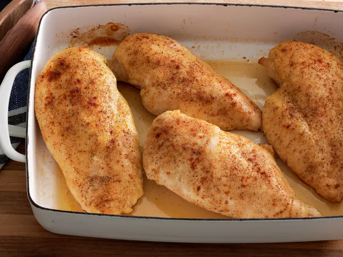

Home
Simple Baked Chicken Breasts

Description
Learn how to bake chicken that's tender, juicy, and perfect every time with this simple, 5-ingredient recipe for boneless, skinless chicken breasts. Adding just a bit of chicken broth to those beautiful pan drippings creates a tasty pan sauce that adds extra flavor at the table.
Ingredients
- Chicken Breasts
- Olive Oil
- Salt
- Creole Seasoning
- Chicken Broth
Steps
- Coat chicken with olive oil, then sprinkle both sides with salt and Creole seasoning.
- Bake chicken at 400° for about 10 minutes, then flip and continue to bake for 15 more minutes (or until juices run clear). Move to plate when finished.
- Pour the chicken broth into the pan used to bake the chicken. Scrape any browned bits off the side. Drizzle the pan sauce over the baked chicken before serving.